Yunusabad Residence uchun ikki tizim bir-biriga ulangan: xaridor bo‘sh xonadonni o‘zi topib bron qiladigan sayt va sotuvni bitta ekrandan boshqarish tizimi. Quyida — har bir imkoniyat, sizga nima berishi va 2 ta video qo‘llanma.
Muammo va yechim
Auditoriya katta, ammo eski sayt (yuresidence.uz) ochilmaydi, profil havolasi faqat «yozing» tugmalariga olib boradi. Xaridor narxni bilish uchun javob kutadi, e’lon saytlarida esa narxni maklerlar aytadi. Ochiq manbalar, 24.09.2026
Video qo‘llanma
1-tizim · Xaridor uchun sotuv sayti
Har bir bo‘lim bitta savolga javob beradi: «bo‘sh xonadon bormi, qanaqa, qancha turadi, oyiga qancha to‘layman va qachon ko‘rsam bo‘ladi?»
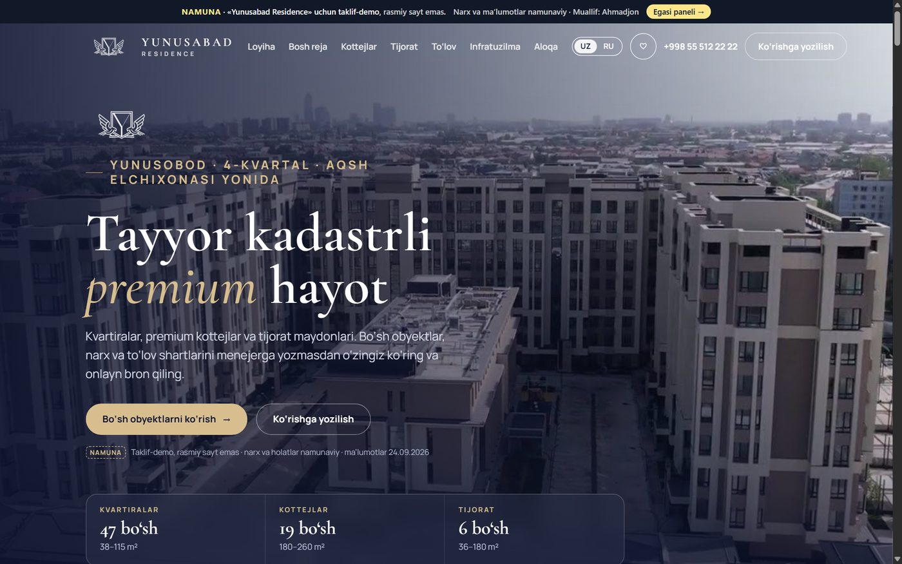
Haqiqiy dron surati, «AQSh elchixonasi yonida», tayyor kadastr. Pastda kvartira, kottej va tijorat bo‘yicha bo‘sh obyektlar soni — jonli ma’lumotdan.
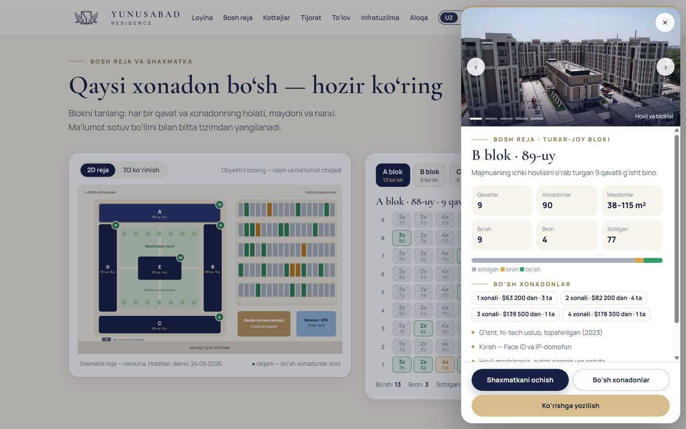
Bosh rejadagi har bir blok, kottej, savdo markazi va basseyn bosiladi. O‘ng tomonda karta ochiladi: suratlar, qavatlar, bo‘sh / bron / sotilgan, bo‘sh xonadon turlari narxi bilan.
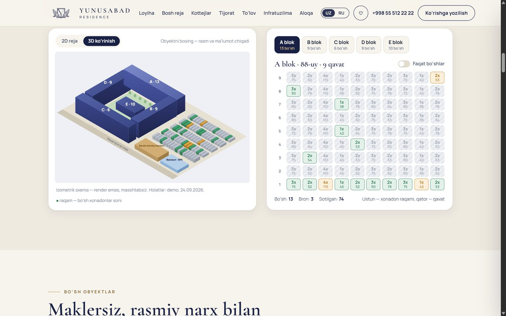
Bir tugma bilan izometrik ko‘rinish: bloklar balandligi, kottejlar qatori, savdo markazi va basseyn. Har bir bino va kottej bosiladi.
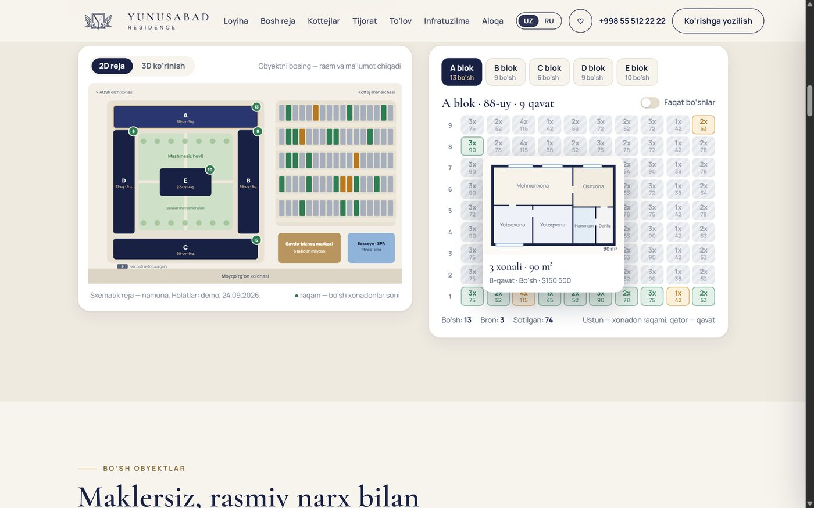
Blok × qavat × xonadon. Katak ustiga borilsa — reja va narx, bosilsa — xonadon oynasi. Sotilganlar yashirilmaydi: xaridor haqiqiy holatni ko‘radi va ishonadi.
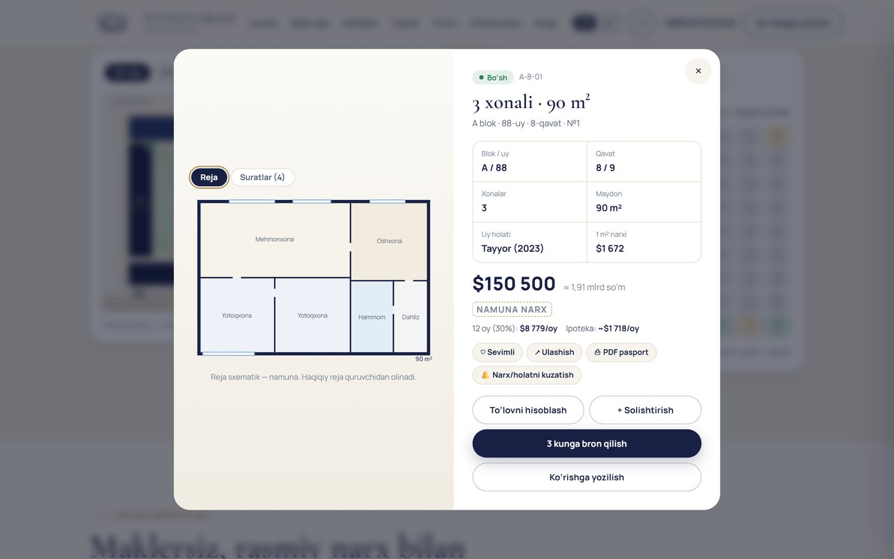
Xonadon rejasi, suratlar, maydon, qavat, $/m², jami narx va so‘mdagi qiymati. 12 oy, ipoteka yoki 7 yil bo‘yicha oylik to‘lov darhol ko‘rinadi.
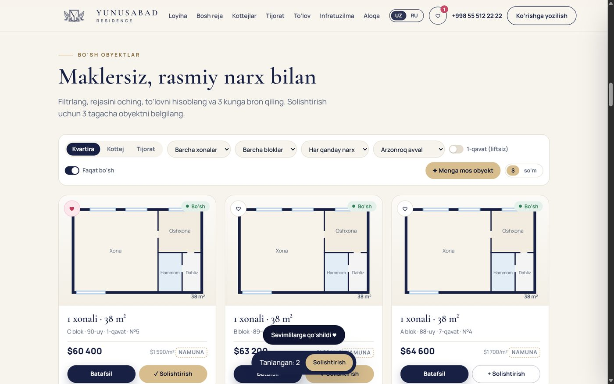
Xona, blok, narx, «1-qavat (liftsiz)» — bolali oilalar va keksalar uchun. 3 tagacha obyektni yonma-yon solishtiradi, eng yaxshi ko‘rsatkich yashil bilan belgilanadi.
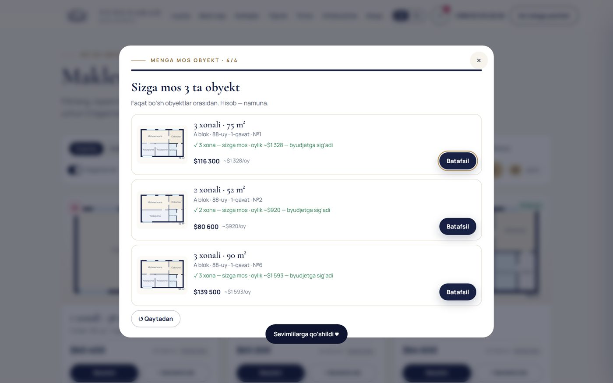
Kim uchun, qanday to‘lash, oyiga qancha qulay, nima muhim. Natija faqat bo‘sh obyektlardan: «2 xona — sizga mos · 1-qavat — liftsiz · oylik byudjetga sig‘adi».
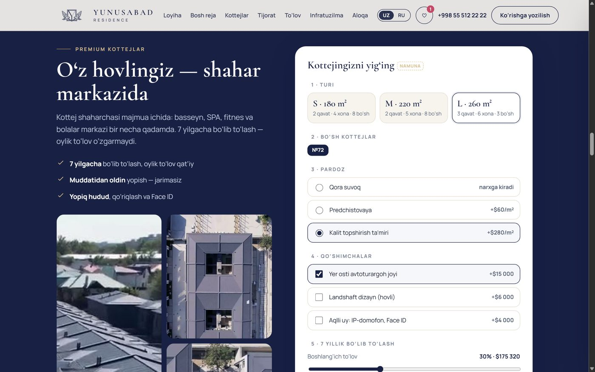
Tur, bo‘sh kottej raqami, pardoz, qo‘shimchalar (parking, landshaft, aqlli uy). Sizning shartingiz — «oylik to‘lov butun muddat o‘zgarmaydi» (2025-yil avgust e’loningiz) — ochiq ko‘rsatiladi.
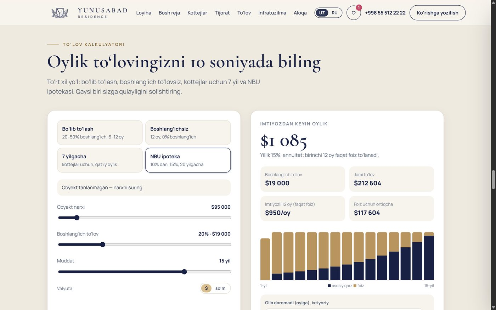
Bo‘lib to‘lash, boshlang‘ichsiz, 7 yil va NBU ipotekasi (nbu.uz dagi shartlar: 15%, 20 yilgacha, 12 oy imtiyoz). Daromadni kiritsa — to‘lov uning necha foizi ekanini va 40% chegarasini ko‘radi.
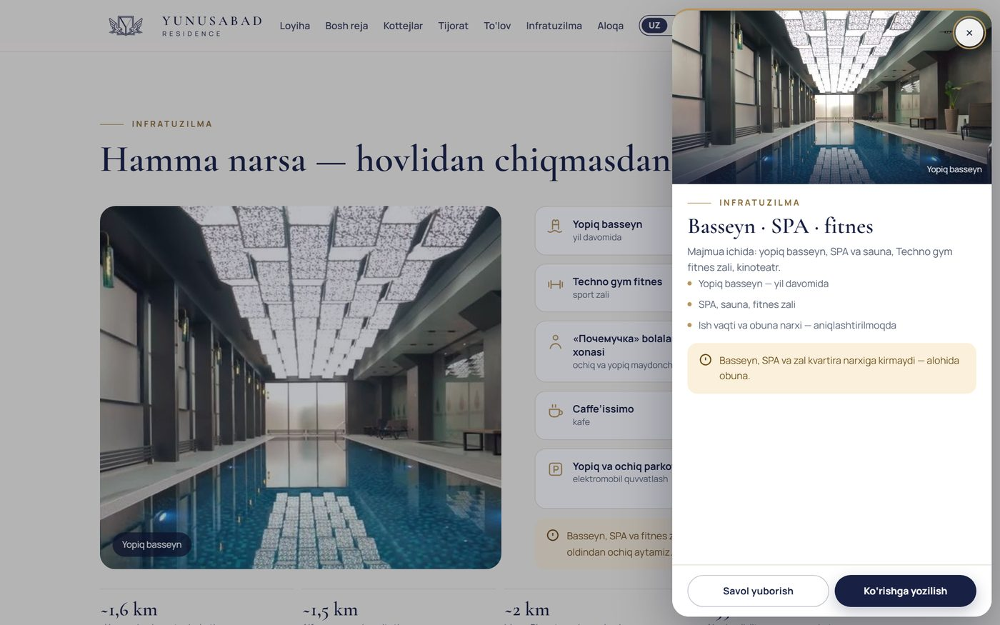
Har bir karta bosiladi. «Basseyn va zal — alohida obuna» ochiq yozilgan: keyin norozilik bo‘lmaydi. Masofalar (metro, Mega Planet, litsey) — xaritada yo‘l bilan.
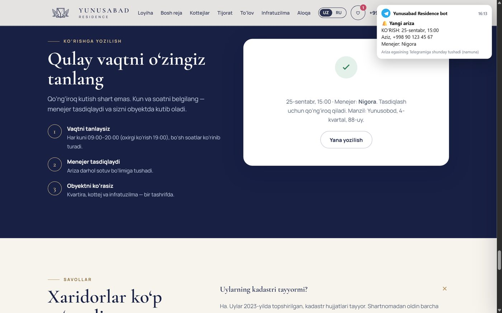
Kun va soat (band soatlar ko‘rinmaydi), ism, telefon. Ariza darhol sotuv bo‘limiga va egasining Telegramiga tushadi, menejer avtomatik biriktiriladi.
2-tizim · Boshqaruv tizimi
Egasi va sotuv rahbari uchun. Alohida manzilda ochiladi, rollar bilan: menejer ishlaydi, egasi nazorat qiladi.
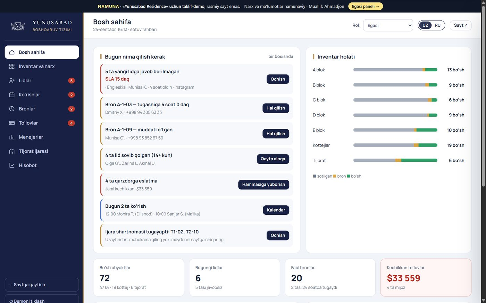
Javobsiz lidlar (15 daqiqa nazorati), tugayotgan bronlar, sovib qolgan mijozlar, qarzdorlar, bugungi ko‘rishlar — har birida bitta tugma. Pastda: inventar, lid manbalari, kelgusi 6 oy tushumi.
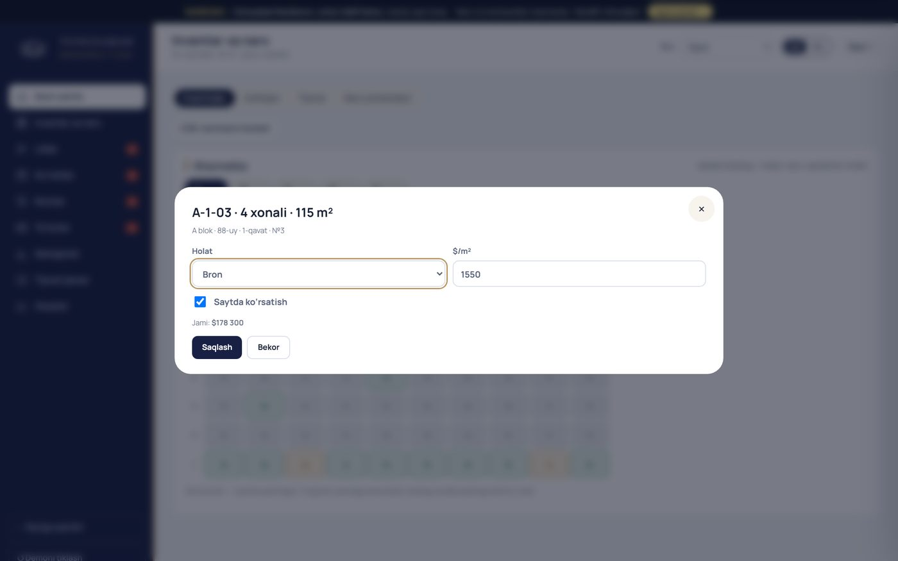
Katakni bosing: holat, $/m², «saytda ko‘rsatish». Bir nechtasini birdan tanlab o‘zgartirish, butun blok narxini foizda oshirish, bazaviy narxlar va kurs.
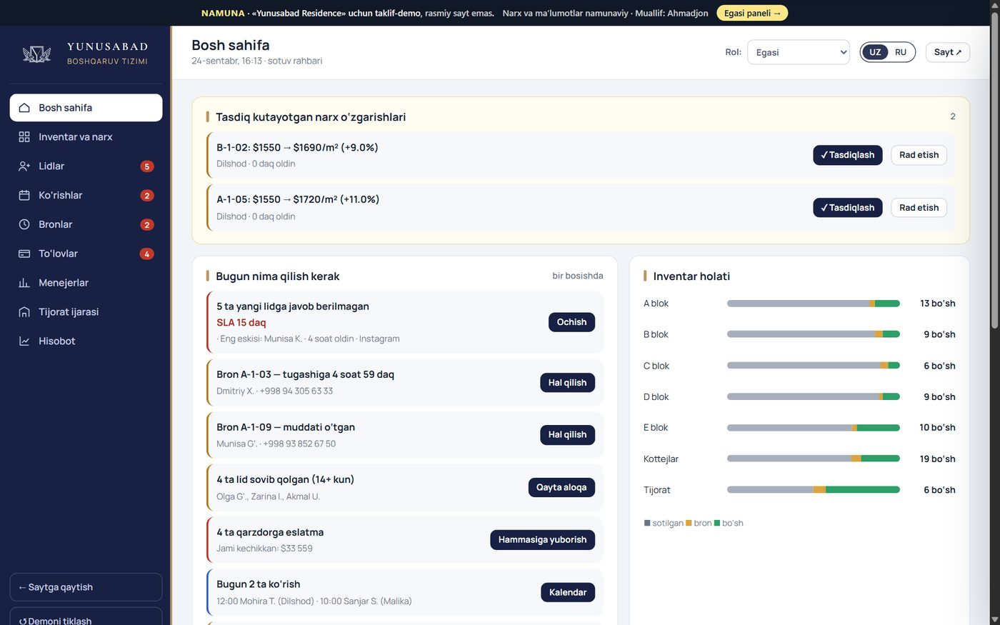
Menejer narxni o‘zgartirsa — u egasining tasdig‘iga tushadi. Egasi bitta tugma bilan tasdiqlaydi yoki rad etadi.
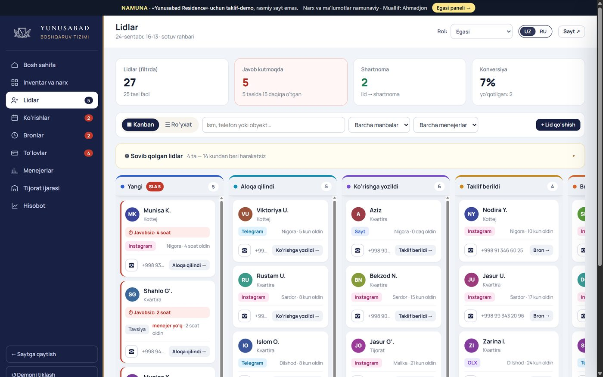
Kanban (Yangi → Aloqa → Ko‘rish → Taklif → Bron → Shartnoma) yoki ro‘yxat. Manba (Instagram, Telegram, sayt, OLX, 2GIS…), javob kechiksa qizil belgi, ☎ tugmasi, «keyingi bosqich →».
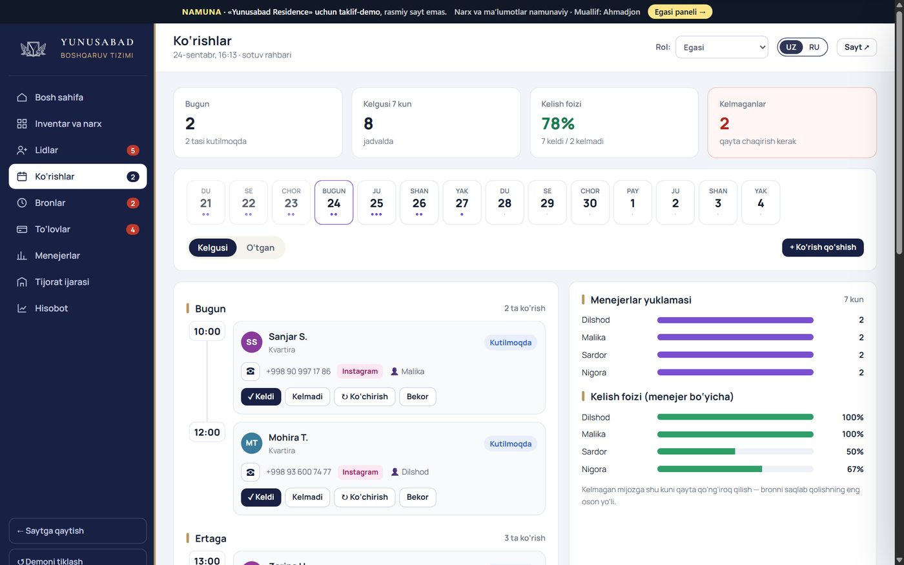
14 kunlik tasma, har bir ko‘rish: vaqt, mijoz, obyekt, menejer. Keldi / Kelmadi / Ko‘chirish / Bekor. Kelganidan keyin — «Taklif berildi →». Menejerlar yuklamasi va tashrifga kelish ulushi.
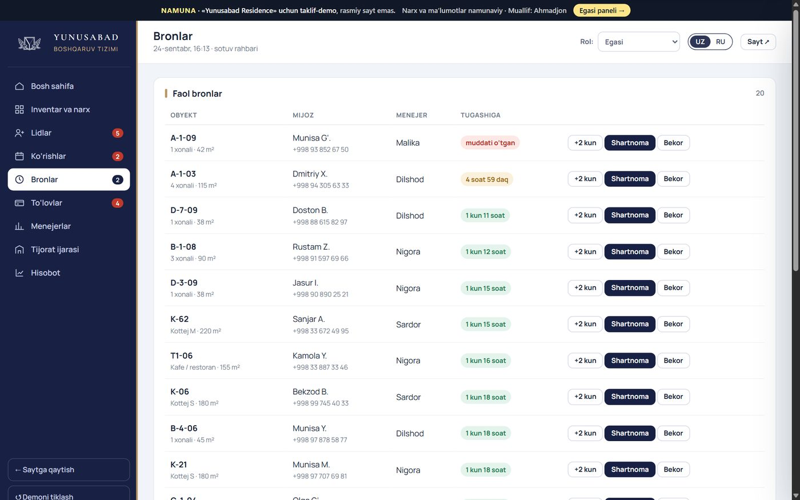
Taymer, uzaytirish faqat sabab bilan, bekor qilishda sabab tanlanadi. Muddati o‘tgan bron avtomatik bekor bo‘ladi va obyekt saytda yana bo‘sh ko‘rinadi.
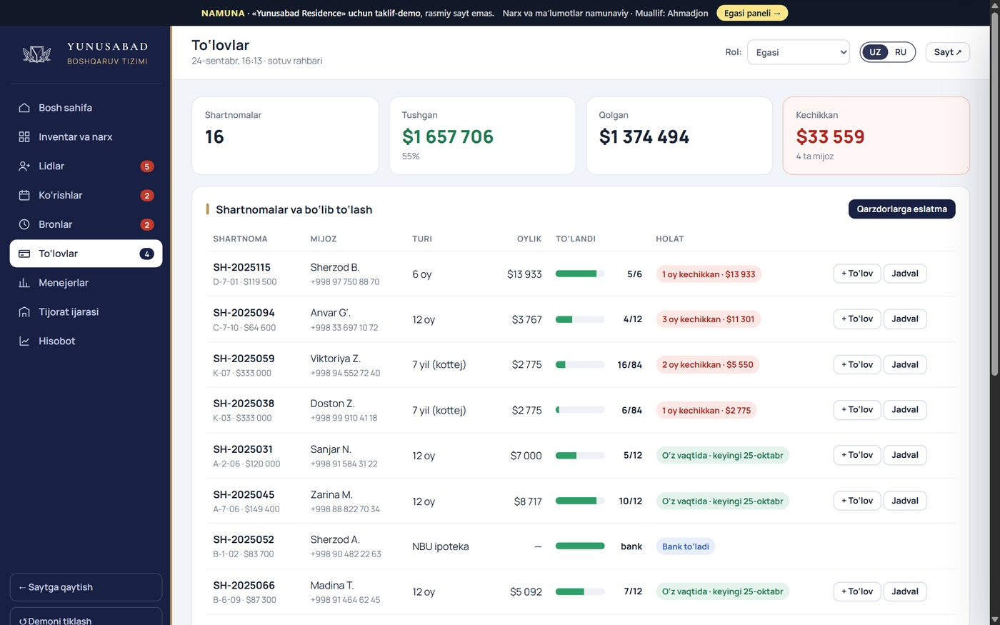
Kim qancha to‘ladi, kim kechikdi, keyingi 7 kunda kim to‘lashi kerak. Qarzdorlarga va oldindan eslatma matni — bir tugmada; to‘lov jadvali va muddatidan oldin yopish summasi.
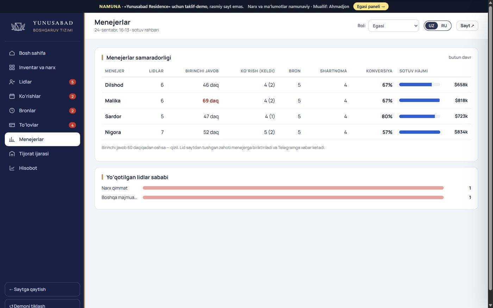
Birinchi javob vaqti, ko‘rish → bron → shartnoma konversiyasi, sotuv hajmi; manba bo‘yicha voronka, oylik sotuv, CSV eksport, ijarachilar.
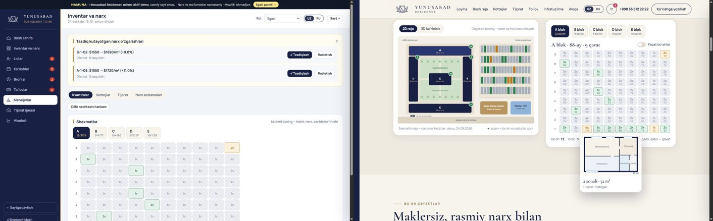
Xonadonni «sotilgan» qildingiz — xaridor ochiq turgan saytda ham shu zahoti sotilgan. Narxni tasdiqladingiz — katalog va kalkulyator yangilandi.
Nima beradi
O‘zingiz hisoblang
O‘z raqamlaringizni kiriting — hisob faqat shu raqamlardan (hech qanday taxminiy statistika qo‘shilmaydi).
Ishga tushirish
Savollar
Yo‘q. Ular reklama uchun qoladi; sayt ular olib kelgan mijozni kutib oladigan rasmiy joy bo‘ladi. Bio’dagi havola saytga olib boradi.
Ha. Ekranlar oddiy: «Bugun nima qilish kerak» ro‘yxati va bitta tugmalar. Topshirishda 1 soatlik o‘rgatish va birinchi oy davomida yordam taklif qilamiz.
Haqiqiy tizimda ma’lumotlar yopiq serverda saqlanadi, boshqaruv tizimiga faqat parol bilan kiriladi, kunlik zaxira nusxa sozlanadi. Bu namunada ma’lumot faqat brauzerda saqlanadi.
Namunada — ochiq manbalardan (2GIS, yangiliklar, YouTube kanallaringiz) va «namuna» belgisi bilan. Haqiqiy tizimda — sizning rasmiy narx va rejalaringiz.
Narx, holat, suratlar — boshqaruv tizimidan o‘zingiz o‘zgartirasiz. Yangi bo‘lim yoki funksiya kerak bo‘lsa — oylik xizmat doirasida qo‘shiladi.
Maslahat: ikkalasini ikki oynada oching — admin’da xonadonni «sotilgan» qiling va saytda darhol o‘zgarganini ko‘ring.